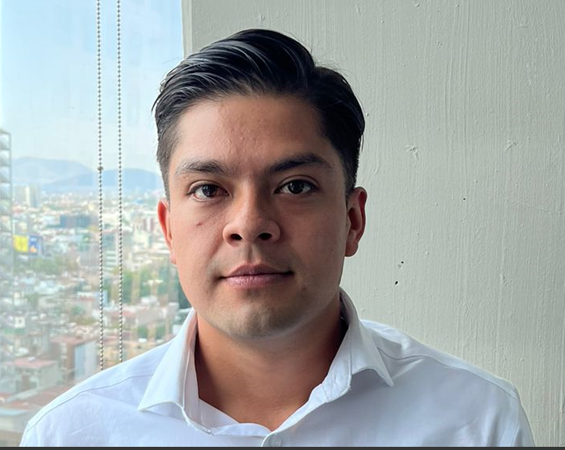
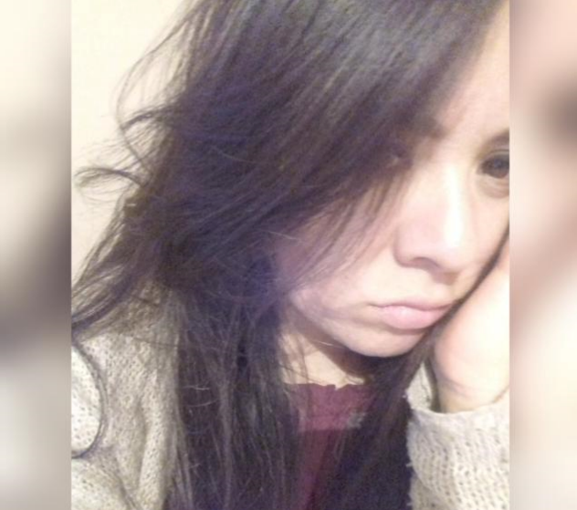

Acerca de...
Nuestro equipo en la universidad es como una gran familia. Todos somos muy unidos,
responsables y realmente inteligentes. Lo que más destaca de nosotros es lo bien
que colaboramos; siempre estamos dispuestos a ayudarnos y apoyarnos mutuamente
para alcanzar nuestras metas comunes.
Nos tomamos muy en serio nuestros valores, nuestra ética y nuestra moral. Eso significa
que actuamos con integridad, siempre siguiendo nuestros principios y respetando lo que
creemos que es correcto. Aplicamos todo lo que hemos aprendido a lo largo de nuestros
estudios, y nos esforzamos al máximo en cada proyecto o tarea.
Patrick

Me considero una persona gentil y amable; siempre trato de hacer que quienes me rodean
se sientan bienvenidos y apreciados. Me gusta aportar un toque de humor a las
situaciones, porque creo que la vida es más alegre cuando podemos reírnos y
disfrutar juntos.
Juan - Casado
Me considero una persona empática y atenta, siempre me esfuerzo por comprender las emociones y perspectivas de los demás. Disfruto creando un ambiente cálido y acogedor, donde la gente se sienta libre de ser quien es y compartir sus pensamientos.
Mi capacidad para mantener una actitud positiva y optimista me ayuda a enfrentar los desafíos con una sonrisa, y me gusta contagiar esa energía a quienes me rodean. La cortesía y la consideración son valores que guían mis acciones, ya que creo que cada interacción merece respeto y atención genuina.
Lupita - En una relación

La cortesía y el respeto son pilares en mi vida diaria. Me esfuerzo por tratar a cada persona con dignidad y consideración, reconociendo la importancia de escuchar y valorar las opiniones de los demás.
Además, mi integridad es algo que valoro profundamente. Actúo siempre con honestidad y coherencia, y me comprometo a ser fiel a mis principios, incluso en situaciones desafiantes. En resumen, busco ser una fuente de apoyo y alegría, integrando empatía, humor, respeto y honestidad en cada aspecto de mi vida.
Xochitl
Me considero una persona creativa y perseverante. Siempre estoy buscando nuevas formas de resolver problemas y de abordar los desafíos con una mente abierta y una actitud innovadora. La creatividad me impulsa a explorar nuevas ideas y a encontrar soluciones originales para los obstáculos que se presentan.
Además, valoro profundamente la dedicación y la constancia. Me esfuerzo por alcanzar mis metas con un compromiso inquebrantable, enfrentando las dificultades con determinación y resiliencia. La capacidad de seguir adelante, incluso cuando las cosas se ponen difíciles, es algo que considero esencial para lograr el éxito
Cris
Me considero un caballero que valora la cortesía y la elegancia en cada aspecto de su vida. Siempre busco mostrar un trato respetuoso y considerado hacia los demás, creyendo firmemente en la importancia de la amabilidad y el buen comportamiento.
Tengo una fuerte ética de trabajo y un sentido de responsabilidad que me guía en todo lo que hago. Me esfuerzo por cumplir con mis compromisos de manera puntual y eficiente, manteniendo siempre un alto estándar en mi desempeño.